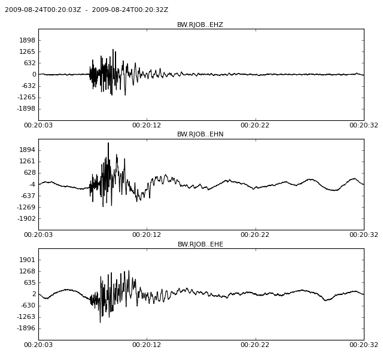
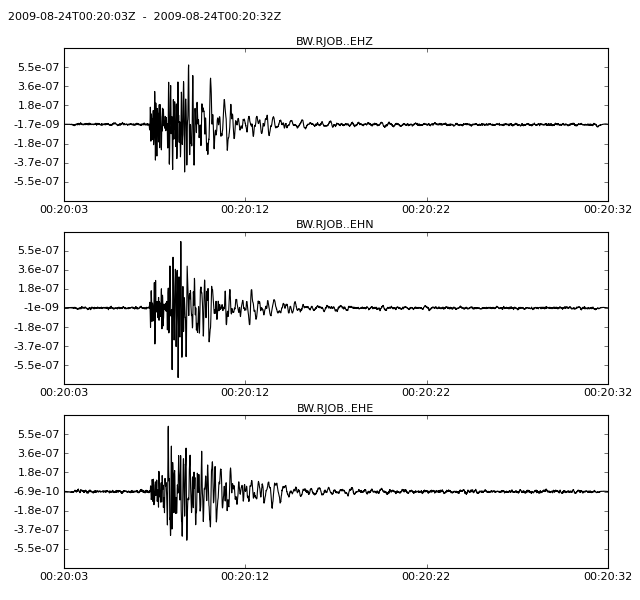
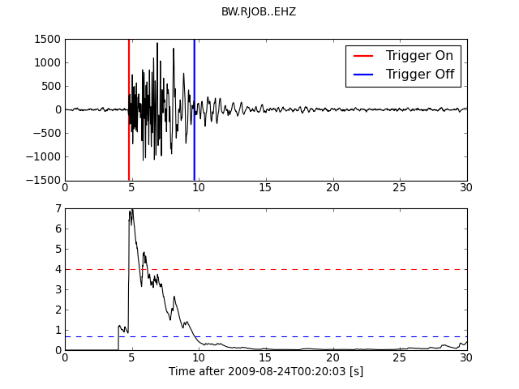
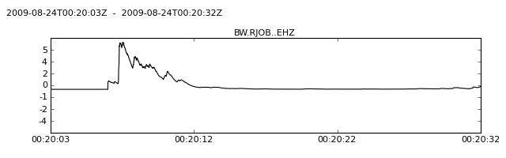

obspy.signal - Signal Processing Routines for ObsPy¶
Capabilities include filtering, triggering, rotation, instrument correction and coordinate transformations.
| copyright: | The ObsPy Development Team (devs@obspy.org) |
|---|---|
| license: | GNU Lesser General Public License, Version 3 (LGPLv3) |
Filter¶
The filter module provides various filters, including different bandpass, lowpass, highpass, bandstop and FIR filter.
Warning
Before filtering you should make sure that data is demeaned/detrended, e.g. using detrend(). Otherwise there can be massive artifacts from filtering.
The following example shows how to highpass a seismogram at 1.0Hz. In the example only the first trace is processed to see the changes in comparison with the other traces in the plot.
Note
The filter takes the data explicitly as argument (i.e. an numpy.ndarray) and therefore the sampling_rate needs to be also specified. It returns the filtered data. For Stream and Trace objects simply use their respective filtering methods Stream.filter() and Trace.filter().
>>> from obspy import read
>>> import obspy.signal
>>> st = read()
>>> tr = st[0]
>>> tr.data = obspy.signal.highpass(tr.data, 1.0, corners=1, zerophase=True,
... df=tr.stats.sampling_rate)
>>> st.plot()
Working with the convenience methods implemented on Stream/Trace works similar:
>>> tr.filter('highpass', freq=1.0, corners=1, zerophase=True)


Instrument Correction¶
The response of the instrument can be removed by the invsim module. The following example shows how to remove the the instrument response of a STS2 and simulate an instrument with 2Hz corner frequency.
>>> from obspy import read
>>> st = read()
>>> st.plot()


Now we apply the instrument correction and simulation:
>>> from obspy.signal import seisSim, cornFreq2Paz
>>> inst2hz = cornFreq2Paz(2.0)
>>> sts2 = {'gain': 60077000.0,
... 'poles': [(-0.037004+0.037016j),
... (-0.037004-0.037016j),
... (-251.33+0j),
... (-131.04-467.29j),
... (-131.04+467.29j)],
... 'sensitivity': 2516778400.0,
... 'zeros': [0j, 0j]}
>>> for tr in st:
... df = tr.stats.sampling_rate
... tr.data = seisSim(tr.data, df, paz_remove=sts2, paz_simulate=inst2hz,
... water_level=60.0)
>>> st.plot()
Again, there are convenience methods implemented on Stream/Trace:
>>> tr.simulate(paz_remove=sts2, paz_simulate=inst2hz, water_level=60.0)


Trigger¶
The trigger module provides various triggering algorithms, including different STA/LTA routines, Z-Detector, AR picker and the P-picker by M. Bear. The implementation is based on [Withers1998] and [Baer1987].
The following example demonstrates a recursive STA/LTA triggering:
>>> from obspy import read
>>> from obspy.signal.trigger import recSTALTA, plotTrigger
>>> st = read()
>>> tr = st.select(component="Z")[0]
>>> tr.filter("bandpass", freqmin=1, freqmax=20)
>>> sta = 0.5
>>> lta = 4
>>> cft = recSTALTA(tr.data, int(sta * tr.stats.sampling_rate),
... int(lta * tr.stats.sampling_rate))
>>> thrOn = 4
>>> thrOff = 0.7
>>> plotTrigger(tr, cft, thrOn, thrOff)


There is also a convenience method implemented on Stream/Trace. It works on and overwrites the traces waveform data and is intended for batch processing rather than for interactive determination of triggering parameters. But it also means that the trace’s built-in methods can be used.
>>> tr.trigger("recstalta", sta=0.5, lta=4)
>>> tr.plot()


For more examples check out the triggering page in the Tutorial. For network coincidence refer to obspy.signal.trigger.coincidenceTrigger() and the same page in the Tutorial. For automated use see the following stalta example scripts.
Classes & Functions¶
| array_rotation_strain | This routine calculates the best-fitting rigid body rotation and uniform strain as functions of time, and their formal errors, given three-component ground motion time series recorded on a seismic array. |
| arPick | Return corresponding picks of the AR picker |
| bandpass | Butterworth-Bandpass Filter. |
| bandstop | Butterworth-Bandstop Filter. |
| carlSTATrig | Computes the carlSTATrig characteristic function. |
| classicSTALTA | Computes the standard STA/LTA from a given input array a. The length of |
| coincidenceTrigger | Perform a network coincidence trigger. |
| cornFreq2Paz | Convert corner frequency and damping to poles and zeros. |
| cosTaper | Cosine Taper. |
| delayedSTALTA | Delayed STA/LTA. |
| envelope | Envelope of a function. |
| estimateMagnitude | Estimates local magnitude from poles and zeros of given instrument, the peak to peak amplitude and the time span from peak to peak. |
| evalresp | Use the evalresp library to extract instrument response |
| highpass | Butterworth-Highpass Filter. |
| lowpass | Butterworth-Lowpass Filter. |
| pazToFreqResp | Convert Poles and Zeros (PAZ) to frequency response. The output |
| pkBaer | Wrapper for P-picker routine by M. Baer, Schweizer Erdbebendienst. |
| PPSD | Class to compile probabilistic power spectral densities for one combination of network/station/location/channel/sampling_rate. |
| psd | Wrapper for matplotlib.mlab.psd(). |
| recSTALTA | Recursive STA/LTA. |
| rotate_NE_RT | Rotates horizontal components of a seismogram. |
| seisSim | Simulate/Correct seismometer. |
| sonic | DEPRECATED: Please use obspy.signal.array_processing() |
| utlGeoKm | Transform lon, lat to km in reference to orig_lon and orig_lat |
| utlLonLat | Transform x, y [km] to decimal degree in reference to orig_lon and orig_lat |
| xcorr | Cross correlation of tr1 and tr2 in the time domain using window_len. |
| zDetect | Z-detector. |
Modules¶
| array_analysis | Functions for Array Analysis |
| calibration | Functions for relative calibration. |
| cpxtrace | Complex Trace Analysis |
| cross_correlation | Signal processing routines based on cross correlation techniques. |
| detrend | Python module containing detrend methods. |
| filter | Various Seismogram Filtering Functions |
| freqattributes | Frequency Attributes |
| hoctavbands | Half Octave Bands |
| invsim | Python Module for Instrument Correction (Seismology). |
| konnoohmachismoothing | Functions to smooth spectra with the so called Konno & Ohmachi method. |
| polarization | Polarization Analysis |
| spectral_estimation | Various Routines Related to Spectral Estimation |
| rotate | Various Seismogram Rotation Functions |
| tf_misfit | Various Time Frequency Misfit Functions based on Kristekova et. al. (2006) and |
| trigger | Various routines related to triggering/picking |
| util | Various additional utilities for obspy.signal. |